හැඳින්වීම
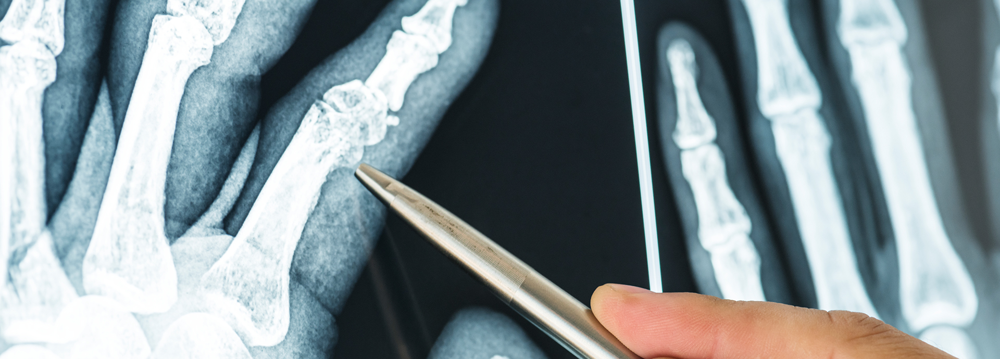
පුර්ව ගාත්රය
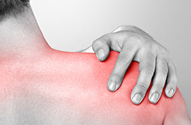
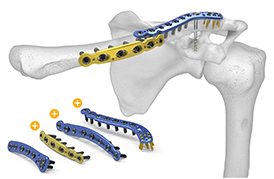
උරහිස සන්දිය හි සිදුවන බිඳීම්
උරහිස මත වැටීම නිසා සන්දිය සාදන අස්ථි කොටස් වල බිඳීම් ඇතිවේ. උරපත්ත හි අස්ථිය හා collar අස්ථියහි බිඳීම් හදහ කර වටා යන වෙළුම් පටිවල ආදාරයෙන් සුවකළ හැකියි. විශේෂ අවස්ථා වලදී පමණක් ශල්ය කර්මයකට යොමු කෙරේ. ප්රධාන අස්ථියේ විසිරි නොගිය පිපිරීම් ඉබේටම සුවවන අතර තුවාල වූ බාහුව උර මාලාවක නිසොල්මන්ව තබා ගැනීම අවශ්ය වේ. සුවවීමට සති 6 ක පමණ කාලයක් ගත වේ. උරහිසේ චලන පරාසය නැවත ලබා ගැනීමට ව්යායාම කිරීමට අවශ්ය වේ. ප්රධාන අස්ථි කොටස කැබලි දෙකකට හෝ කීපයකට බිඳී විසිරි ගිය විට, එම කොටස් එකලස් කර එම අස්ථි කොටසට විශේෂිත වූ ලෝහමය පතුරක් ආදරයෙන් සවි කරනු ලැබේ. උරහිස ආසන්නයේ සිදුකරන කැපුමක ආදරයෙන් ශල්ය කර්මය සිදුකෙරේ. ශල්ය කර්මය සදහා පැය 1-2 පමණ කාලයක් ගතවන අතර රෝහිය සිහි නැති කිරීමකට ලක්කෙරේ. මෙම ශල්යකර්මය සඳහා වයසේ හෝ උත්සන්න නොවූ නිදන්ගත රෝගයන්ගේ බලපෑමක් නැත. දින 1-2 කාලයක් රෝහල් ගත විය යුතුයි. සමහර අවස්ථාවල අස්ථිය බිඳීමට අමතරව උරහිස සන්දිය පනිමකටද ලක් විය හැක. මම අවස්ථාවද ශල්ය කර්මයකින් තොරව සුවකළ නොහැක. සුවවීමට සති 6 ක පමණ කාලයක් ගත වේ. උරහිසේ චලන පරාසය නැවත ලබා ගැනීමට ව්යායාම කිරීමට අවශ්ය වේ.
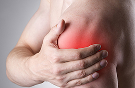
පුර්ව ගාත්රයේ ඉහල කොටසේ අස්ථිය බිඳීම (Humerus)
මෙම අස්ථියේ වැඩිමනක් මැද කොටස තුල සිදුවන අස්ථිය කොටස් දෙකකට පමණක් බිඳී ගිය විට, අස්ථියේ කුහරය තුලට සවිකරන ලෝහමය නලයක ආදාරයෙන්, අස්ථිය නැවත පන ගැන්වීමකින් සුවය ලබා ගත හැක. ශල්ය කර්මයෙන් පසු පැය 2-6 දක්වා කාලයක් තුලදී අත එසවීමට, වැලමිටින් නැවීමට හැකියාව ලැබේ. එය එතරම්ම සාර්ථක ශල්ය කර්මයකි. අස්ථිය කොටස් කීපයකට කැඩී ඇති විටද මෙසේ සවිකළ හැකි අතර අත චලනය කිරිඉමට ඇති හැකියාව තක්සේරු කලයුතු වේ. මෙම ශල්ය කර්මය සදහා සිහිය නැති කිරීමෙන් සිදු කෙරේ. පැයක පමණ කාලයක් මේ සඳහා ගත වේ. දිනක හෝ දෙකක කයලයක් රෝහල් ගතවී සිටිය යුතුයි.
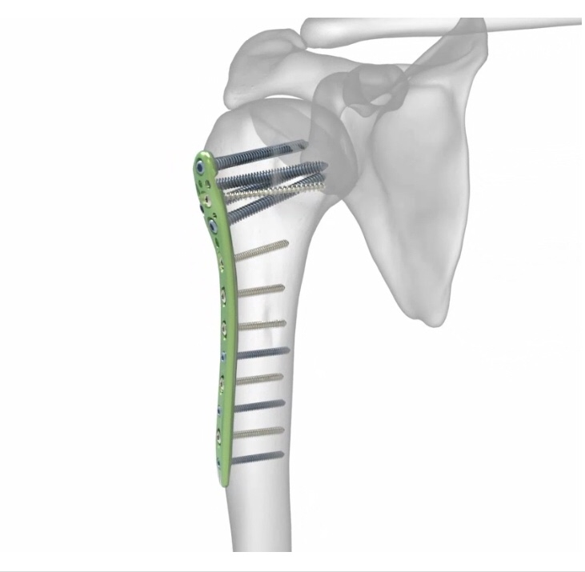
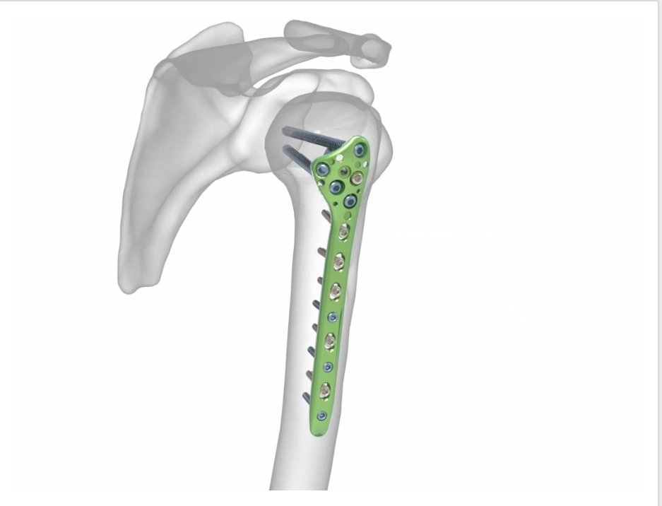
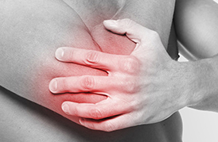
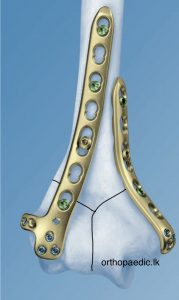
වැලමිට සන්දිය ආශ්රිතව සිදුවන් බිඳීම්.
වැලමිට සන්දිය සැදීමට අස්ථි තුනක් උපකාරී වේ. බහුවෙ ඉහල අස්ථියේ කෙලවර කොටස හා වැලමිටින් පහල කොටසේ ඇති අස්ථි උගලය මෙයට දායක වේ. මුලින් සදහන් කල අස්ථියේ පහල කෙලවර කොටසේ සිදුවන බිඳීම් වඩිමනක්ම ශල්ය කර්මයකට යොමුකළ යුතු වේ. පහල කොටසේ අස්ථි උගලයෙන් ප්රධාන වශයෙන්ම සන්දිය සැදීමට උපකාරීවන Ulna අස්ථියේ විසිරි ගිය බිඳීම් කම්බි ආදරයෙන් නැවත එකලස් කරනු ලැබේ. වැඩ සංකීර්ණ වූ බිඳීම් විශේෂිත වූ ලෝහමය plate මගින් සවි කෙරේ. අනෙක් අස්ථියේ (Radius ) බිඳීම් නැවත සකස් කිරීම, සවිකිරීම හෝ බිඳුණු කොටස ඉවත් කිරීම සියුම් පරීක්ෂාවකින් පසු තීරණය කෙරේ. මෙම ශල්ය කර්මය සිහිය නැති කිරීමෙන් සිදු කෙරේ. පැයක දෙකක පමණ කාලයක් මේ සඳහා ගත වේ. දිනයක් හෝ දෙකක් කයලයක් රෝහල් ගතවී සිටිය යුතුයි.
විකල්ප ප්රතිකාර අනිවාර්ය අසාර්තකය. කැඩී ගිය කොටස් එක පොදියක් ලෙස සවි වීම නිසා වැලමිට සන්දිය සම්පුර්ණයෙන් ගල් වී කිසිදු චලනයක් සිදුකිරීමට නොහැකි තත්ත්වයකට පත්වේ.
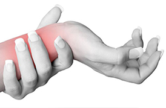
පුර්ව ගාත්රයේ පහල කොටසේ බිඳීම්
මෙම කොටසේ අස්ථි දෙකක් පවතියි. මෙයින් එක් අස්ථියක් පමණක් හෝ දෙකම හෝ බිඳී නොවිසිරිනු අවස්ථාවක පැරිස් බදාම කොලපුවක ආදරයෙන් නිසොල්මන්ව තැබීමෙන් සුවකළ හැක. මේ සඳහා සති හයක පමණ කාලයක් සාමාන්යයෙන් ගතවේ. ඒවා විසිරි ගිය විට ඇන යොදා සවි කලයුතුවේ. සිහි නැති කිරීමන් ශල්ය කර්මය සිදු කෙරේ. ඒ සදහා පැයක දෙකක පමණ කාලයක් මේ සඳහා ගත වේ. සුව වීමට සති හයක පමණ කාලයක් ගතවේ. දිනයක් හෝ දෙකක් කායලයක් රෝහල් ගතවී සිටිය යුතුයි.
විකල්ප ප්රතිකාර අනිවාර්ය අසර්තකය. අත කොට වී සවි වීම, ඇදට සවිවීම, අත දෙපිට පෙරලීමට නොහැකියාව, ඇඟිලි හරිහැටි ක්රියා කාරී නොවීම මැණික් කටුව සන්දිය හිර වීම, ඇත පන නැති වීම හා හිරි ගතිය හා ඇත සිහින් වීම විකල්ප පතිකාර වලට යොමු වීම නිස ඔබට දැනටමත් සිදුවී ඇති හෝ ලැබෙන සන්කුලතාවන්ය.
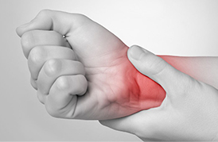
මැණික් කටුව ප්රදේශයේ සිදුවන බිඳීම්
මෙම කොටසේ සිදුවන බිඳීම් වලට නිසි ප්රතිකාර ගැනීම පසුකාලීනව මැණික් කටුව සන්දියේ හා අතහි ඇගිලිවල ක්රියාකාරිත්වය ප්රශස්ත මටමකින් පවත්වා ගැනීමට මහෝපකාරී වේ. මෙහිදීද අස්ථිය පිපිරී නොවිසිරුණු විට පැරිස් බදාම කොලපුවක ආදරයෙන් මැණික්කටුව ප්රදේශය නිසොල්මන්ව තැබීමෙන් සුව කර ගත හැක. විසිරි ගිය කොටස් නිර්වින්දනය කර වෛද්ය වරයා විසින් අතින් හසුරුවා සකස් කර, එම කොටස් නැවත විසිරීමේ හැකියාව ඇගයීමකට ලක්කෙරේ. කොටස් ස්ථායිව පවතින බව හැඟෙ නම් පැරිස් බදාම කොලපුවක ආදාරයෙන් රදවා ගැනේ. නොඑසේනම් සමහි ඉතා කුඩා සිදුරු කිහිපයකින් කම්බි යවා අස්ථි කොටස් සවි කෙරේ. මීටත් වඩා සංකීර්ණ වූ බිඳීම් ශල්ය කර්මයක් ආදරයෙන් ප්ලේට් හා ඇන යොදා සවි කෙරේ. වැඩිමනක් ආරක්ෂාවට පැරිස් බදාම අදරකයක් තබනු ලැබේ. විකල්ප ප්රතිකාර අසාර්ථකයි. අත ඇදට සවිවීම, අත දෙපිට පෙරලීමට නොහැකියාව, ඇඟිලි හරිහැටි ක්රියා කාරී නොවීම මැණික් කටුව සන්දිය හිර වීම, ඇත පන නැති වීම හා හිරි ගතිය හා අත සිහින් වීම විකල්ප පතිකාර වලට යොමු වීම නිස ඔබට දැනටමත් සිදුවී ඇති හෝ ලැබෙන සන්කුලතාවන්ය.
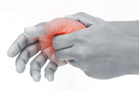
අත්ලේ හා ඇඟිලි වල අස්ථි බිඳීම්
අතල තුල හා ඇගිලි වල කුඩා අස්ථි විශාල ප්රමාණයක් පවතයි. නොවිසිරුණු අස්ථි පිපිරීම් ඉබේටම සුවවේ. සමහර අවස්ථා වලදී පමණක් පැරිස් බදාම දීමක් සිදු කෙරේ. විසිරී ගිය කොටස් එක්තැන් කර සවි කිරීමෙන් අතේ යතා ස්වභාවය හා ක්රියාකාරිත්වය පවත්වා ගත හැක. සවි කිරීම සදහා ලෝහමය කම්බි, වයර හෝ ඇන හා විශ්ෂිත කුඩා පතුරු යොදා සවි කරනු ලැබේ. විකල්ප ප්රතිකාර අසාර්ථකයි.
අපර ගාත්රය
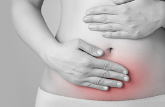
උකුල සන්දිය බිදියාම
වයස අවුරුදු 70 පමණ පුද්ගලයන් හා ඊට වඩා වයසැති අය බිම ඇදවැටීම නිසා උකුල සන්දිය බිඳී යයි. නවීන සමීක්ෂණ වලට අනුව මෙසේ බිඳීගිය සන්දිය හැකි ඉක්මනින් ශල්ය කර්මයකට භාජනය කර යථා තත්ත්වයට පත්කළ යුතුයි. මෙම බිඳීම සැකසිය හැක්කේ ශල්ය කර්මයකින් පමණි. ශල්ය කර්මය කල්දමිම නිසා නිදන්ගත රෝග උත්සන්න වීම, පෙනහළු හා මුත්ර අසාදන වලට ලක් වීම, කෙනඩ වල ලේ කැටි ගැසීම, පිටකොන්දේ තුවාල ඇති වීම් වැනි සන්කුලතා වලට රෝගියා ගොදුරු විය හැක. රෝගියා මිය යා හැක මෙම සංකුලතා පවතීම නිසාවෙන් රෝගියාගේශරීරික සුවතාවය ශල්යකර්මයක් කිරිමට නුසුදුසු විය හැක. ශල්ය කර්මය ඉතා සාර්ථක ප්රතිපල ගෙනදේ. පැය 6 ක වගේ කෙටි කාලයක් තුලදී රෝගියාට වාඩිවීමට හෝ අදාරකයක් සමග හිට ගැනීමටහැකියාව ලැබේ. පසුදිනම ඇවිදීමට සැලැස්විය හැක. මීට වඩා ප්රතිපලයක් තිබේද ? මෙය කකුල් පමණක් හිරිවට්ට කරන ශල්යකර්මයකි. උකුල සනිදියහි හිස කොටස ආසන්නයේ ඇතිවන බිඳී යෑම්, ලෝහමය හිස කොටසක්අස්ථියට සවි කිරීමෙනුත්, ඊට පහල අස්ථි කොටසේ බිඳීම ඇන යොදාද සවිකරනු ලැබේ. කකුල් කොටවීමක් හෝ ඇදට සවිවිමක් සිදු වන්නේනැත. දින 1-2 රෝහල් ගත වී සිටීමට සිදුවේ. මෙම ශල්ය කර්මය කිරීමට වයස ගැටළුවක් නොවේ. වයස අවුරුදු 100 ඉක්මවූ අයද සන්කුලතවයකින් තොරව ම විසින් සාර්ථකව ශල්යකර්මයට භාජනය කර සුවපත් කර ඇත. උත්සන්න නොවූ දියවැඩියාව, අදික රුධිර පීඩනය, පපුවේ අමාරු, ඇදුම, කොලෙස්ටරෝල් මේ සඳහාබාදාවක් නොවන බව මතක තබා ගන්න.
වෙනත් ප්රතිකර්ම සාර්ථකද?. අනිවාර්යයෙන්ම අසාර්ථකයි. උකුල හිසට ආසන්නව ඇති බිඳීම් වෙනත් ප්රතිකාර ක්රම මගින් කිසි දිනෙක සුවනොවේ. පසු කාලීනව ශල්ය කර්මයක් කිරීමට ඔබ කැමති වුවත්, එය අමාරු එකක් හෝ නිසි ප්රතිපල ඇත නොවීමේ හැකියාවක් පවතියි. ඊටපහල කොටසේ බිඳීම්, වෙනත් ප්රතිකාර මගින් ඇදට සවිවන අතර, රෝගියා සිට ගැනීමට හෝ ඇවිදීමට මාස දෙකක පමණ කාලයක් ගතවේ. මේකාලය තුල රෝගියා මිය යාමේ හැකියාවක්ද ඇත.
වයස අවුරුදු 70 අඩු අයගේ උකුල සන්දියේ බිඳීම් වලට ප්රතිකාර
වයස සීමාවකින් තොරව උකුල සන්දියේ ගෙල කොටසට මදක් පහලින් ඇතිවන බිඳුම් ඇන යොදා සවි කරනු ලැබේ. මින් පසු බොහෝ රෝගීන්ට පසු දින සිට හිද ගැනීමට, අදාරකයක් සමග හිට ගැනීමට හැකියාව ලැබේ. උකුල සන්දියේ ගෙල ආශ්රිතව සිදුවන බිඳී යාම් වලට විශේෂ ශල්ය සර්මයකින් පමණක් දිඟු කාලීන සුවයක් ලැබේ. වයස අවුරුදු 50-70 දක්වා යට උකුල සන්දිය සම්පුර්ණයෙන්ම පතිස්ථාපනය කිරීමේ යෝග්යතාවය සලකා බලනු ලැබේ. මෙයට හේතුව නම්, අදාල වයස් සිමාවේ පුද්ගලයන්ගේ ක්රියාශීලි භාවය හා ශල්ය කර්මයෙන් යොදන ලෝහමය කොටස් රෝගියාගේ ඉදිරි ජිවිත කාලයට ගැලපිය යුතු වීමයි. ඊට අඩු වයස් වල රෝගීන්ට කරන ශල්ය කර්මය රෝගියා පරික්ෂා කිරීමෙන් පසු තීරණ කරනු ලැබේ.
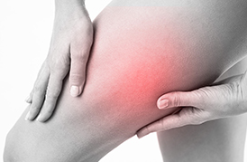
කලවය අස්ථිය බින්දියාම
කලවය අස්ථියේ වැඩිමනක් මැද කොටස තුල සිදුවන අස්ථිය කොටස් දෙකකට පමණක් බිඳී ගිය විට, අස්ථියේ කුහරය තුලට සවිකරන ලෝහමය නලයක ආදාරයෙන්, අස්ථිය නැවත පන ගැන්වීමකින් සුවය ලබා ගත හැක. ශල්ය කර්මයෙන් පසු පැය 2-6 දක්වා කාලයක් තුලදී හිද ගැනීමට, අදාරකයක් සමග හිට ගැනීමට හා ඇවිදීමට හැකියාව ලැබේ. එය එතරම්ම සාර්ථක ශල්ය කර්මයකි. අස්ථිය කොටස් කීපයකට කැඩී ඇති විටද මෙසේ සවිකළ හැකි අතර වහාම හිට ගැනීමේ හා ඇවිදීමේ හැකියාව තක්සේරු කලයුතු වේ. මෙම ශල්ය කර්මය සදහා කකුල් පමණක් හිරි වැට්ටිමෙන් හෝ සම්පුර්ණයෙන් සිහිය නැති කිරීමෙන් සිදුකල හැක. පැයක පමණ කාලයක් මේ සඳහා ගත වේ. දිනක හෝ දෙකක කයලයක් රෝහල් ගතවී සිඉටිය යුතුයි.
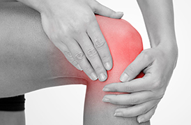
දණහිස සන්දිය ආශ්රිත අස්ථිවල බිඳීම්
දණහිස සන්දිය සකස් වී ඇත්තේ කලවය අස්ථිය, කෙණ්ඩයේ අස්ථිය හා දනිස් 'පොල්කට්ට' යන අස්ථි තුනේ එකතුවෙනුයි. දනිස් පොල්කට්ටහි සිදුවන පිපිරීම් ප්ලාස්ටර් කිරීමෙන් පමණක් සුවකළ හැකි අතර බිඳුණු කොටස් වෙන්වී ගිය විට කම්බි යොදා කොටස් එකලස් කලයුතුවේ. දණහියේ එහල කොටසේ හා පහල කොටසේ අස්ථි බිඳීම් X-ray, CT ස්කෑන් පරීක්ෂණ කිරීමේ අවශ්යතාවයක් ඇති අතර ඒ මගින් අස්ථි බිඳීමේ සංකීර්ණතාවය පිලිබඳ වැඩි විස්තර ලබා ගත හැකිවේ. මෙම බිඳීම් එම අස්ථි කොටස් සඳහා විශේෂිත වූ ලොයමය ප්ලේට් එකක් හෝ දෙකක් යොදා සවිකළ යුතු වේ. සුව වීමට සති 8-10 වැනි කාලයක් ගතවේ. මේ කාලය තුලදී කකුළට බර තබා අවිදීමක් සිදු නොකළ යුතුයි. දණහිසේ ක්රියාකාරිත්ව යලි ලබා ගැනීමට ව්යායාම වල නිරතවිය යුතුයි. සන්දිය නැමීමේ හා දිගහැරීම සිමා විය හැකියි. නිතර ව්යායාම වල නිරත් වීමෙන් මෙම තත්ත්වය මගහරවා ගත හැක.
මෙම ශල්ය කර්මය සදහා කකුල් පමණක් හිරි වැට්ටිමෙන් හෝ සම්පුර්ණයෙන් සිහිය නැති කිරීමෙන් සිදුකල හැක. පැය 1-3 පමණ කාලයක් මේ සඳහා ගත වේ. දිනක හෝ දෙකක කයලයක් රෝහල් ගතවී සිඉටිය යුතුයි.
මෙම කොටසේ බිඳීම් සඳහා විකල්ප ප්රතිකාර 100% ම අසාර්ථක බව පැවසිය යුතුයි. කකුල අදවිම, කොටවිම, නොන්ඩි ගැසීමකට ලක්විය හැක. ලබා ගත හැකි උපරිම ප්රතිපල ශල්ය කර්මයකින් පමණක් ලබා ගත හැක.
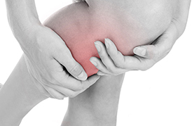
කෙන්ඩය අස්ථියේ බිඳීම
කෙන්ඩය කොටසේ ප්රධාන හා උප අස්ථියක් පවතී. මෙම ප්රධාන අස්ථියේ වැඩිමනක් මැද කොටස තුල සිදුවන, අස්ථිය කොටස් දෙකකට පමණක් බිඳී ගිය විට, අස්ථියේ කුහරය තුලට සවිකරන ලෝහමය නලයක ආදාරයෙන්, අස්ථිය නැවත පන ගැන්වීමකින් සුවය ලබා ගත හැක. ශල්ය කර්මයෙන් පසු පැය 2-6 දක්වා කාලයක් තුලදී හිද ගැනීමට, අදාරකයක් සමග හිට ගැනීමට හා ඇවිදීමට හැකියාව ලැබේ. එය එතරම්ම සාර්ථක ශල්ය කර්මයකි. අස්ථිය කොටස් කීපයකට කැඩී ඇති විටද මෙසේ සවිකළ හැකි අතර වහාම හිට ගැනීමේ හා ඇවිදීමේ හැකියාව තක්සේරු කලයුතු වේ. උප ප්රධාන අස්ථියේ බිඳීම් අවශ්යතාවය මත පමණක් ශල්ය කර්මයට ලක් කෙරේ. ශල්ය කර්මයෙන් පසු පැරිස් බදාම පළක යෙදීමක් අවශ්ය නැත. මෙම ශල්ය කර්මය සදහා කකුල් පමණක් හිරි වැට්ටිමෙන් හෝ සම්පුර්ණයෙන් සිහිය නැති කිරීමෙන් සිදුකල හැක. පැයක පමණ කාලයක් මේ සඳහා ගත වේ. දිනක හෝ දෙකක කයලයක් රෝහල් ගතවී සිඉටිය යුතුයි.
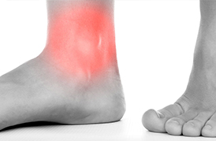
වළලුකර සන්දිය ආශ්රිත බිඳීම්.
කකුල නොපිටට පෙරලීම නිසා වළලුකර සන්දියේ අස්ථි බිඳියා හැකියි. අස්ථි එකක් හෝ දෙකම හෝ පිපිරී විසිරි නොගොස් ඇතිවිට පැරිස් බදාම කොලපුවක කකුල නිසොල්මන්ව තැබීමෙන් සුවකර ගත හැකියි. විසිරී ගිය කොටස් නැවත සැකසීම අත්යවශ්ය වන අතර එසේ නොකිරීමෙන් අනිසි ප්රතිපල ගෙනදේ. මෙම ශල්ය කර්මය සදහා කකුල් පමණක් හිරි වැට්ටිමෙන් හෝ සම්පුර්ණයෙන් සිහිය නැති කිරීමෙන් සිදුකල හැක. පැයක පමණ කාලයක් මේ සඳහා ගත වේ. දිනක හෝ දෙකක කයලයක් රෝහල් ගතවී සිඉටිය යුතුයි.
මෙම බිදියාම සති 6 ක පමණ කාලයකින් සුව අතට හැරේ. එතෙක් පාදයට බර නොතැබිය යුතුයි. සුවවීමෙන් පසු, වළලුකර සන්දියේ තද ගතිය, පිටිපතුල හා වළලුකර අවට හවසට ඉදිමීම සාමාන්ය සිදුවීමකි. ඒවා කාලයත් සමග හා ව්යායාම මගින් අඩු කර ගත හැක.
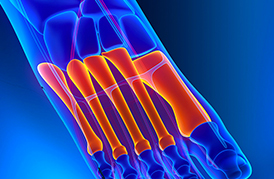
පාදයේ හා ඇඟිලි අස්ථි බිඳීම්
පාදය තුල කුඩා අස්ථි විශාල ප්රමාණයක් පවතයි. නොවිසිරුණු අස්ථි පිපිරීම් ඉබේටම සුවවේ. සමහර අවස්ථා වලදී පමණක් පැරිස් බදාම දීමක් සිදු කෙරේ. විසිරී ගිය කොටස් එක්තැන් කර සවි කිරීමෙන් පාදය යතා ස්වභාවය පවත්වා ගත හැක. සවි කිරීම සදහා ලෝහමය කම්බි, වයර හෝ ඇන හා විශ්ෂිත කුඩා පතුරු යොදා ගැනේ.
27 සංදී පැනීම සුලබවම පැනීමට ලක් වන්නේ උරහිස, උකුල, වැලමිට, වළලු කර හා දණහිස හා දනිස් පොල්කට්ට සන්දියයි. රෝහලකට පැමිණීමෙන් ඉතා කෙටි කාලයකදී, මිනිත්තු 3-5 පමණ නිර්වින්දනයට ලක් කිරීමෙන් කිසිම වේදනාවකින් තොරව හන්දිය යථා තත්ත්වයට පත් කර ගත හැක. එදිනම හෝ පසුදා රෝහලෙන් මුදා හරිනු ලැබේ. ඉන් පසු අදාල හන්දිය ආදරකයක මාර්ගයෙන් සති කිහිපයක් නිසොල්මන්ව තබනු ලැබේ. නැවත ක්රියාකාරී සීමාවන්ට ගැනීමට ව්යායාම කල යුතුයි. විකල්ප ප්රතිකාර අසාර්ථකයි. මුලින්ම කිව යුත්තේ පණපිටින් පැනපු සන්දිය බලෙන් අදින විට අදික වේදනාවක් ඇතිවේ. බොහෝ අවස්ථා වල සන්දිය හරි හැටි නැවත සකස් වේ නැති අවස්ථා මා බොහෝ විට දැක ඇත. සියලුම සංදී වලට තෙල් හා පත්තු බැඳීමෙන් සංදී වල ස්වභාවය හා ක්රියාකාරිත්වය දැඩි ලෙස විනාශ වේ. ඔබට මෙය තේරෙන විට ඔබ ප්රමාද වැඩිය. සන්දිය පැන එය නැවත සකස් කලේ නැතිනම්, කල්ගිය පැනීම් යතා තත්ත්වයට පත් කිරීමට පැය 1-3 පමණ ශල්ය කර්මයක් කල යුතු අතර එහි සන්කුලතා ද බොහෝයි. මෙය නියපොත්තෙන් කැඩීමට තිබු දෙය පොරවෙන් කැපිමකට සමානය. දණහිස පැනිමකදී දණහිසේ බන්දනී වලට හානි සිදුවන බැවින් පසුව ස්කන් පරීක්ෂණ කර හානිය හඳුනාගත යුතුයි. දනිස් පොල්කට්ට පැනීමද මේ ආකාරයෙන්ම සකස් කර ගත හැක.
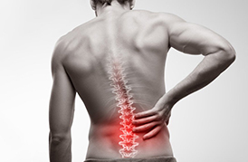
කොඳු නාරටියේ අස්ථි බිඳීම්
මාර්ග අනතුරු, උසකින් වැටීම නිසා ලංකාවේ සුලබවම කොන්දුනරටියට හානි සිදුවේ. බොහෝ විට මෙම තුවාල වලට ගොදුරු වන්නේ වයස අවුරුදු 35-50 අතර පිරිමි අයවලුනුයි. ගෙලෙහි කශේරුකා වලට හා කොඳු නාරටියේ පහළ කොටසේ කශේරුකා වලට වැඩිමනක්ම හානියට ලක්වේ. මෙම තුවාල වලින් ශුශුම්නවට හානි සිදු වීමට හෝ නොවීමට ඉඩ තිබේ. ශුශුම්නාවට හානි සිදුවී ඇත්නම් කකුල නොදැනීම, පණනැති ගතිය, මුත්ර හා ගුද මාර්ග පාලනයෙන් ගිලිහි යාම වැනි ලක්ෂණ පෙන්නුම් කරයි. කොඳු නාරටියට හානි වුවද එය තවදුරටත් ස්ථායි බව තවදුරටත් පවත්වා ගත හැකි මට්ටමක පවතීනම් හා ශුශුම්නවට හානි වීමේ අවදානමක් නැතිනම් පමණක් ශල්ය කර්මයක් නොකොට ප්රතිකාර කිරීම පිලිබඳ සලකා බලනු ලැබේ. මෙවැනි බිඳීමක් සුව වීමට සති 6-10 අතර කාලයක් ගතවේ. එම කාල පරාසය තුල රෝගියා අනිවාර්ය යහන මත විවේකයෙන් ගත කල යුතුයි. කොඳු නාරටියහි ස්ථායි බවට අදාරකයක් ලෙස Spinal Brace එකක් භාවිතා කිරිඉමට උපදෙස් දෙනු ලැබේ. වාඩි වී ස්නානය කරන විටදී පමණක් මෙය ඉවත් කිරීමට අවසර ඇත. වාඩි වී සිටීමේදී අත් දෙක පුටු අඳි මත තබා ශරීරයට ආදාරකයක් ලෙස භාවිතා කල යුතු වේ. සති දෙකකට වරක් පමණ බඳී ගිය කොටසේ X-ray බලනු ලැබේ. කොන්දුනරටියට සිදුවී ඇති හානිය එය අස්ථායි කර ඇත්නම්, ශල්ය කර්මයක් මගින් සති බවට හැරවිය යුතුයි. මේ සඳහා බිඳුණු කශේරුකාවට යාබද කශේරුකා දෙක විශේෂිත වූ ඇන යොදා සවිකරනු ලැබේ. මේනිසා ශුශුම්නාවට තවදුරටත් හානි සිදුවීමේ ප්රවනතාවය අඩු වේ. ශල්ය කර්මයෙන් පසු දින 2-3 පමණ රෝහලින් මුදා හල හැක. Spinal Brace ය සමග පුනුරුත්තාපන ව්යායාම වල නිරත විය යුතුයි. සාමාන්ය කටයුතු වල නියැලීමට සති 8 ක පමණ කාලයක් ගතවේ. යම්හෙයකින් කොදුනාරටිය අසාද්ය ලෙස කැඩී ගොස් ශුශුම්නවටද හානි වී රෝගියාගේ ඉනෙන් පහල කොටස පන නැතිවී ඇත්නම්, සත්තු සේවා හා පුනුරුත්තාපන කටයුතු ඉටු කරලීම පහසුවනු පිණිස කශේරුව ශල්ය කර්මයකින් සකසනු ලැබේ. ශුශුම්නාවට වූ හානිය සාමාන්යයෙන් නැවත හරි නොයන අතර ඉතිරිවී ඇති ක්රියාකාරිත්වය භාවිතයෙන් තමන්ගේ කටයුතු කර ගැනීමට සුදුසු ලෙස රෝගියා පුනුරුත්තාපනය කරනු ලැබේ.